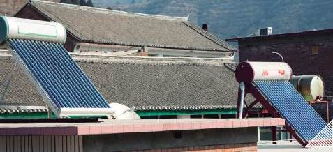

Notes from Rio+20: The Green Economy
By
Ruben Doboin

On Sunday, I headed to the Forte de Copacabana for an event hosted by the World Resources Institute (WRI) about the “green economy.” I heard their temporary installations were grand, but somehow all I saw was the inside of a windowless makeshift conference room. Thankfully, the event was very interesting. It was split into three sessions: the value of sustainability and unlocking next practices, green jobs and investments, and advances in the greenhouse gas protocols for businesses. I thought the first panel was the most relevant to the MIF’s work.
Here are some things that stuck with me and that I thought I would share:
During his introduction, the acting head of WRI, Manish Bapna, asked us to reflect on the changes that have occurred within the past 20 years related to sustainability. His point of view: Awareness has increased while trend lines have shown decline. Businesses used to address sustainability in order to manage risks, but the new trend is in seeing opportunities for profits. Businesses used to act behind sustainability policies; now they contribute to policy-making by being at the table. His comment about businesses finding growth and competitive opportunities resonated with me precisely for the work the MIF is undertaking, such as the release of the Climatescope.
The keynote speaker was Peter Madden, CEO of the Forum for the Future. I was intrigued by his work: he runs a strategy consulting company, structured as a non-profit business, to help businesses develop and test innovative business models for a sustainable future. In the first panel, sustainability officers from huge corporations such as Siemens, Mars, and PepsiCo shared their views regarding business and sustainability. Siemens’ Kersten-Karl Barth recommended that if anyone is disillusioned with politicians for the past 20 years, “well, don’t wait for the politicians.” He spoke of Siemens’ increasing work in large renewable energy plants. Andrew Hobday from Mars illustrated how they look at emissions and environmental impact in their supply chain, highlighting that when you look at the upstream and downstream extremes, emissions are higher, yet Mars’s greatest control over emissions management and reduction is where it matters the least.
This was a way to highlight the challenges in working with supply chains, but also emphasizes the MIF’s importance in working with upstream MSMEs. It validates the pilot we are developing in Brazil to get 200 SMEs on the road to emissions management certification along with the Brazilian national standards body (ABNT); as well as our project with Tec de Monterrey in Mexico, working on sustainability certification for 3,000 SMEs.
Robert ter Kuile from PepsiCo actually showcased a project with the IDB’s Opportunities for the Majority, to remove trans-fats in their food products by sustainably replacing the palm oil production with sunflower oil.
The moderator asked about the biggest barriers. Here they were:
- Proper measurement. And that led to a plug for WRI’s greenhouse gas protocol.
- Risk-taking and testing of innovative and sustainable business models. To which I waved my arms and yelled, ‘here we are!’
- Funding. To which I again let the crowd know about the opportunities in partnering with the MIF.
- The panel did not speak about MSMEs’ incentives other than pressures imposed from large buyers. So, I put them on the spot. Here were their answers:
- The benefits for a company to act sustainably are the same, whether they are large or small. The only potential difference is that huge multinationals have a greater footprint and therefore greater impact.
- Large firms have a responsibility to do more than impose standards and expect SMEs to comply or see what shakes out. Thus the engagement with SMEs and building the segment’s competencies are not only a responsible practice, but good for business, since it builds competition and drives costs down while increasing quality.
I got some great information from the other panels, which I only wanted to touch on briefly:
In the second panel, Emilio la Rovere of the Federal University of Rio de Janeiro gave a great overview of Brazil’s recent activities in renewable energy investments and the low-carbon economy. Michael Liebreich, CEO of Bloomberg New Energy Finance (and our partner in developing the Climatescope) gave an overview of global trends and highlighted the juxtaposition of political and geopolitical issues against microeconomics.
For the third panel, Carlos Klink, Brazilian National Secretary on Climate Change and Environmental Quality, spoke of Brazilian initiatives related to climate change and fostering low-carbon economies. The highlight of this panel was launching new greenhouse gas protocols for agriculture, which is being piloted in Brazil, for Scope 3 emissions in value chains, and WRI’s work in developing Citywide GHG protocol to measure emissions of cities and their connected activities, as well as Mitigation Accounting Guidelines.